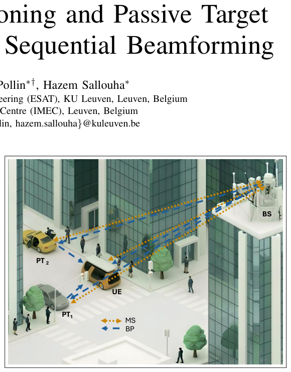

Joint Mobile User Positioning and Passive Target Sensing using Optimized Sequential Beamforming
ISAC 里把单基地感知 (MS) 当作双基地定位 (BP) 的「贝叶斯先验提供者」——先 MS 估 UE 和被动目标的协方差，再传给 BP 阶段做正则化，单个共享 beamformer 全局优化。
关键贡献
- 首个把 UE 移动性 (velocity) 显式纳入 ISAC 序贯波束设计的 CRB 优化框架
- MS → BP 协方差传递做贝叶斯先验，比两阶段独立优化捕捉到「信息耦合」
- 理论 + 仿真证明：单个共享 beamformer 跨两阶段全局优化 > 两阶段分别贪心
解读
背景与问题：6G ISAC 范式里，单基地感知 (Monostatic Sensing, MS) 用 BS 的同址发射/接收阵列分析回波，擅长被动目标 (Passive Target, PT) 检测；双基地定位 (Bistatic Positioning, BP) 用 BS-UE 的空间分离链路让 UE 估计自身位置/速度，几何分散度更高定位更准。一个典型场景是 GPS-拒止的城市峡谷里自动驾驶车辆 (UE) + 行人/障碍 (PTs)：MS 帮 BS 看清环境、BP 让车辆得到无漂移的绝对位姿。但两个任务抢同一波束/同一段符号资源。
现有方案的不足：(1) 几何静态——绝大多数 ISAC 资源分配工作把 UE 当成静止，忽略真实场景下 UE 移动（28GHz 高速车辆 CPI 只有 ~100μs），抛弃了 Doppler 这块巨大信息；(2) 加权和折中——Zhang 等 (TWC'25) 把 BP/MS CRB 加权和做多目标优化，是一种贪心两阶段思路，本质上等于把能量在两个阶段重新分配，没利用先后阶段的协方差信息传递；(3) 滤波层融合（Ge 等 EKF）在波束设计层不优化，能耗利用率有限。
核心方法：作者提出速度感知的序贯波束赋形框架，关键有 3 步：
1. 位置域 CRB 推导：在 mmWave MIMO-OFDM 模型下推出 BP 和 MS 各自的 FIM（Slepian-Bangs 公式），用 Jacobian 把 delay/angle/Doppler 通道参数映射到 2D 位置 + 2D 速度域。给出约束「固定能量预算」下的非凸资源分配问题。
2. 序贯贝叶斯优化：MS 先跑，输出 UE 和 PT 的位置先验协方差矩阵；这份协方差传到 BP 阶段作为 prior 正则化。这个顺序至关重要——单独 BP 估 PT 时几何多样性不足且受 clock bias 这种 nuisance 干扰，加了 MS 协方差先验后才能联合估 PT + 精修 UE 位置。
3. 共享 vs 分离 beamformer：作者证明全局优化同一个 beamformer 跨两阶段 > 两阶段各贪心一个 beamformer——因为「相同照射模式同时强化 MS 后验和 BP 似然」，分开就把能量稀释了。再加一个自适应时间分配策略控制两阶段符号比例。

实验设置：仿真，28 GHz mmWave MIMO-OFDM，UE 速度 5-50 m/s 多场景；200 次 Monte Carlo（随机 UE/PT 位置 [5,100]m）；指标 PEB (Position Error Bound, cm) 和 VEB (Velocity Error Bound, cm/s)（log scale）。对比 4 种波束策略：full-MS、full-BP、shared sequential、separate sequential。还分别评估 Snapshot MS（两个时刻位置差分推速度）和 Extended MS（用 Doppler 联合估 radial+tangential）。
关键结果：
- BP 在 PT≥2 后位置精度反超 MS，因为多 PT 提供几何多样性解开同步参数；MS 的 PEB 反而随 PT 增加变差（能量被多波束摊薄）；
- 高速场景下 Snapshot/Extended MS 的 VEB 随速度恶化（CPI 内 Doppler 旋转太快有效观测变少）；
- 共享 sequential beamformer 全面优于分离 sequential——共同照射模式让 MS 先验和 BP 似然同向强化；
- 综合下来达成 cm 级 UE/PT 位置精度 + 鲁棒速度估计 + 显著低于贪心两阶段的计算开销。
局限与可推广性：(1) 纯仿真，未做硬件原型；(2) 假设 channel-domain FIM 对角（参数间无耦合），需要大孔径阵列 + 高带宽支撑；(3) 高速移动 (UAV 50m/s @ 60GHz) 场景下 CPI 只有 50μs，论文未充分探索资源是否还够支持序贯执行。
原始摘要
Integrated sensing and communication (ISAC) relies on monostatic sensing (MS) and bistatic positioning (BP) to enable comprehensive environmental awareness and user localization. However, existing frameworks predominantly assume static geometries and optimize these modalities independently, neglecting user mobility and sequential information sharing. In this paper, we propose a velocity-aware sequential beamforming framework that dynamically couples MS and BP in time.